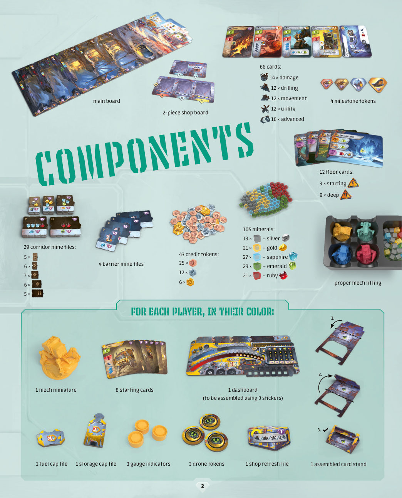
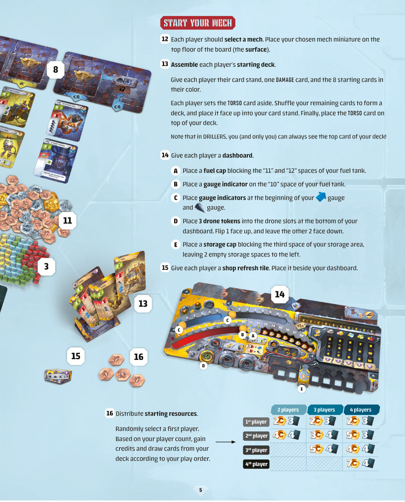
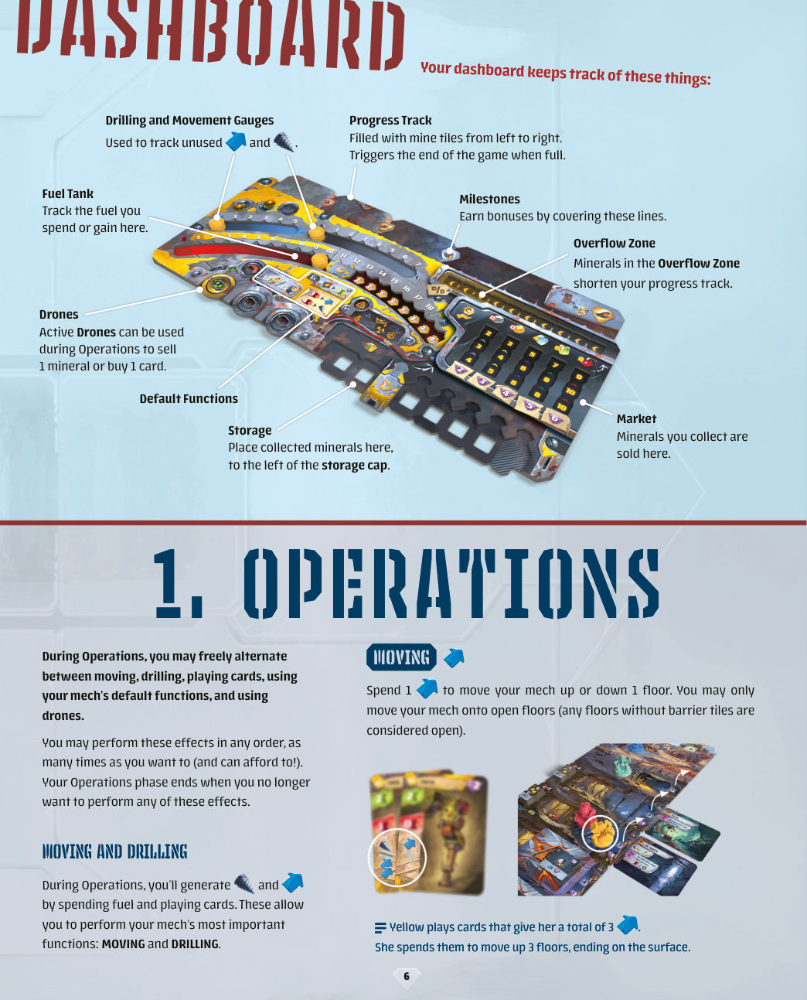
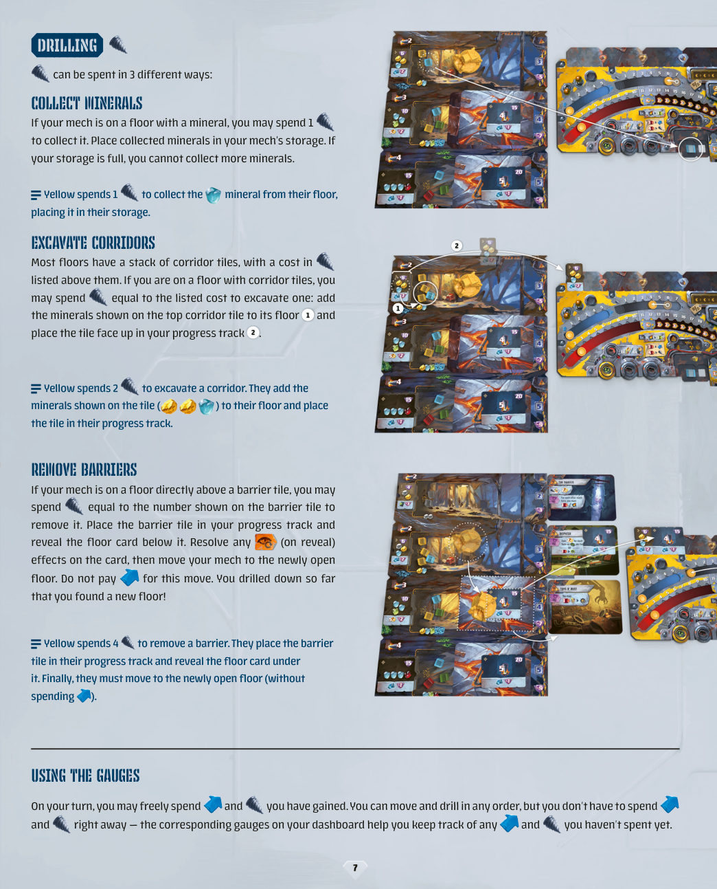
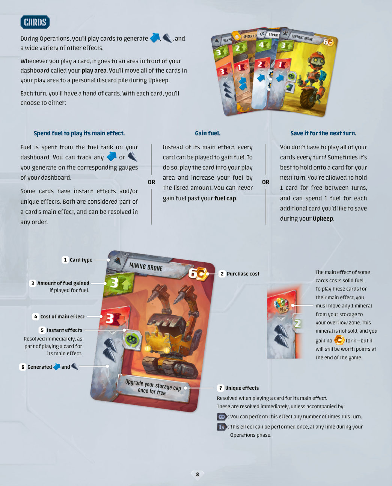
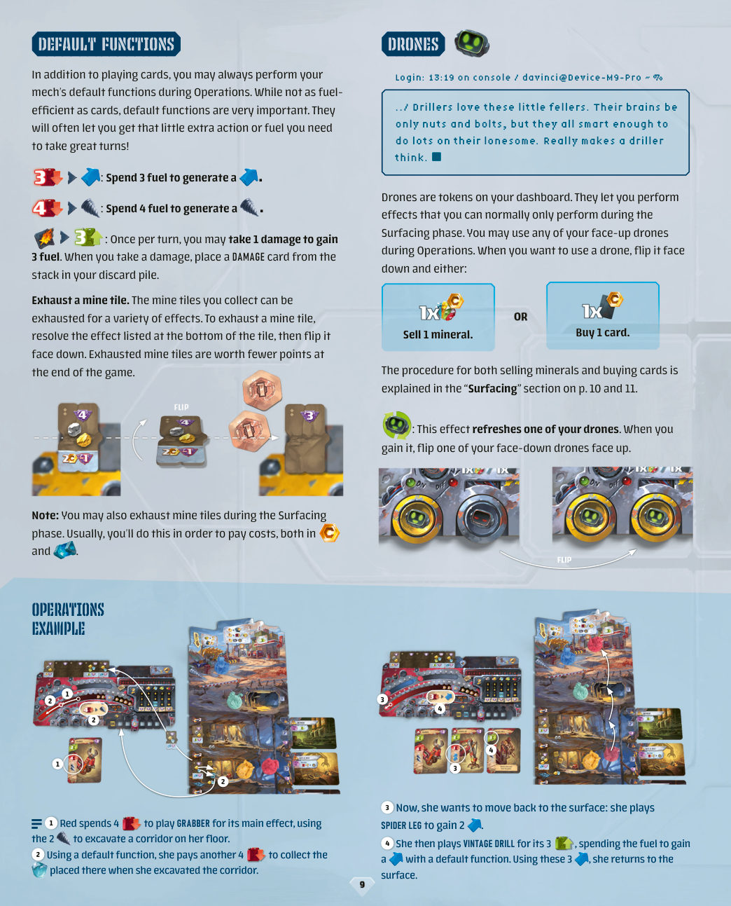
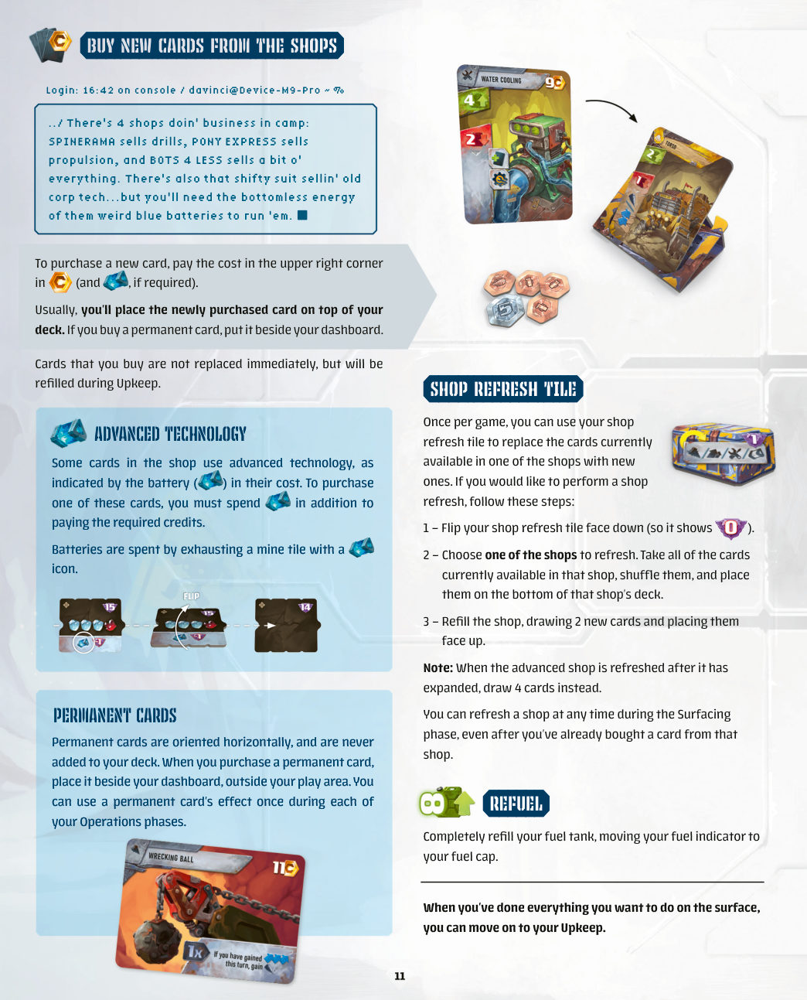
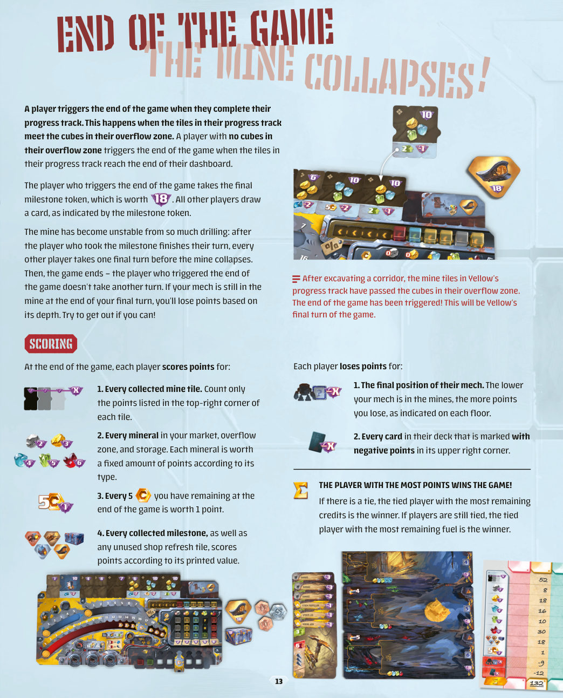
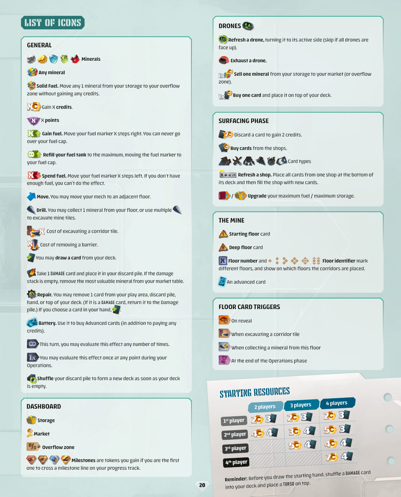

钻探者
01游戏背景
宝贝这么多，四面八方的钻探者都赶来了，抢着往自己机甲的货舱里塞最亮的那些矿物。不过……我看见你眼里那道光了。那个坑在叫你。也许，只要肯下点苦功夫，你也能成为下一个传奇钻探者。
作为一名称职的钻探者，你的目标是：
- 造一台好机甲——给座驾买新卡，修好它受的损伤。
- 收集值钱的矿物——终局时，仪表盘上每一枚矿物都算分。
- 扩张矿坑——钻开矿区板块，通往新的层，发现新的矿物。每钻开一块矿区板块都算分。
玩家轮流行动，直到有人触发终局；其余玩家各再走一个回合，然后所有人结算名气——分数最高者加冕为传奇钻探者。
四台机甲
| 机甲 | 一句话 |
|---|---|
| HEADMASTER | 几十年没请过一天病假。 |
| RAILBREAKER | 永远待在轨道上——哪怕轨道是他自己压出来的。 |
| SPLASH | 一口咬定死神洞里没什么好怕的。 |
| MAYDAY | 她的“瞎猜”往往准得离谱。 |
02配件
| 类别 | 数量 | 说明 |
|---|---|---|
| 卡牌 | 66 张 | 损伤 14／钻井 12／移动 12／通用 12／高级 16 |
| 层卡 | 12 张 | 起始层卡 3／深层卡 9 |
| 信用点代币 | 43 枚 | 面值 1 共 25 枚／面值 5 共 12 枚／面值 10 共 6 枚 |
| 矿物 | 105 枚 | 银 13／金 21／蓝宝石 27／绿宝石 23／红宝石 21 |
| 里程碑代币 | 4 枚 | 进度轨 3 枚＋终局 1 枚 |
| 障碍矿区板块 | 4 块 | 每块印一个钻井费用 |
| 坑道矿区板块 | 29 块 | 按层分 5 叠：5／6／7／6／5 |
| 主板 | 1 块 | 7 层：地表＋入口层＋5 层地下 |
| 商店板 | 2 块 | 拼成一块，摆在矿坑上方 |
| 机甲模型 | 1 个 | 另有“机甲收纳衬垫”用于收纳 |
每位玩家（按颜色）
| 配件 | 数量 | 用途 |
|---|---|---|
| 仪表盘 | 1 块 | 需贴 3 张标签组装 |
| 燃料盖 | 1 个 | 封住燃料罐顶端的格位 |
| 储藏盖 | 1 个 | 封住储藏区右端的格位 |
| 仪表指示物 | 3 个 | 1 个走燃料罐，2 个走钻井表／移动表 |
| 无人机标记 | 3 个 | 翻面表示可用／已用 |
| 商店刷新板块 | 1 块 | 每局可用一次 |
| 起始卡 | 8 张 | 与 1 张损伤卡共同组成起始牌库 |
| 牌架 | 1 个 | 需组装，用来正面朝上放牌库 |

03准备
3.1 布置矿坑
- 展开主板放在桌面中央。主板共 7 层：地表、入口层（第 1 层）以及 5 层地下矿坑（第 2–6 层）。
- 大多数层一开始就摆着矿物。按每层印刷的图案摆上对应矿物——例如第 2 层摆两枚图示矿物。
注意：第 4 层开局还要放两张卡（见第 9 步）。 - 剩下的矿物堆在矿坑旁边备用。
- 洗混 3 张起始层卡，抽 1 张正面朝上放在第 2 层的层卡指示标记旁。
- 洗混 9 张深层卡，在每一个印有深层指示标记的层上各放 1 张，背面朝下。没用到层卡放回盒中。
- 找出 4 块障碍板块，各放在矿坑最深的 4 层上，让板块左上角的层号与该层编号一致。
- 把所有坑道板块翻到正面，让上面印的矿物可见；按左上角的层标记分成 5 叠，每叠内部洗混，放到对应层左侧的指定区域。

3.2 布置地表
- 把商店板的两块拼好，摆在矿坑上方。
- 按卡牌左上角的图标分类：
·起始卡先放在一旁——它们会成为每位玩家的起始牌库。
·损伤卡整叠放在商店板左侧。
·其余卡按图标分成若干叠，各自洗混，背面朝下放在商店板对应位置。每一叠就是一个商店。 - 从每家商店各翻 2 张放在商店板下方，排成 4 列。另外从高级商店里取 2 张，不看牌面，背面朝下塞到第 4 层那张深层卡下面。
- 把 4 枚里程碑代币放在商店板旁。
- 把所有信用点堆在商店板旁。
3.3 启动机甲
- 每位玩家选一台机甲，把模型放在主板最上层（地表）。
- 组装起始牌库：发给每位玩家牌架、1 张损伤卡和8 张自己颜色的起始卡。把 TORSO（躯干）卡先拿出来；其余卡洗混组成牌库，正面朝上放进牌架；最后把躯干卡放在牌库顶上。
注意：在《钻探者》里，你（也只有你）永远能看到自己牌库顶那张牌。 - 给每位玩家发一块仪表盘：
- A 用燃料盖封住燃料罐的“11”“12”两格。
- B 把一个仪表指示物放在燃料罐的“10”格上。
- C 把两个仪表指示物分别放在钻井表和移动表的起点。
- D 把 3 枚无人机标记放进仪表盘底部的无人机槽，1 枚正面朝上，另外 2 枚背面朝上。
- E 用储藏盖封住储藏区第 3 格，左侧留出 2 个空格。
- 给每位玩家一块商店刷新板块，放在仪表盘旁。
- 发放起始资源：随机决定起始玩家，然后按人数与顺位，各自领取信用点并抽牌（见 3.4 表）。

3.4 起始资源
| 顺位 | 2 人局 | 3 人局 | 4 人局 |
|---|---|---|---|
| 第 1 家 | 2 信用点／抽 3 张 | 2 信用点／抽 3 张 | 2 信用点／抽 3 张 |
| 第 2 家 | 4 信用点／抽 4 张 | 3 信用点／抽 4 张 | 5 信用点／抽 3 张 |
| 第 3 家 | — | 5 信用点／抽 4 张 | 4 信用点／抽 4 张 |
| 第 4 家 | — | — | 7 信用点／抽 4 张 |
04仪表盘
仪表盘是每位玩家的作业面板，记录这些内容：
| 区域 | 作用 |
|---|---|
| 进度轨 | 矿区板块从左往右填进去。填满即触发终局。 |
| 里程碑线 | 盖住里程碑线即可获得奖励（见 9.2）。 |
| 储藏区 | 收集到的矿物放这里，位置在储藏盖的左侧。 |
| 无人机 | 可用状态的无人机能在操作阶段卖掉 1 枚矿物，或买 1 张卡。 |
| 默认功能 | 机甲随时可用的三种基本功能（见 6.4）。 |
| 市场 | 收集到的矿物在这里卖出。 |
| 溢流区 | 溢流区里的矿物会缩短你的进度轨。 |
| 燃料罐 | 记录你花费与获得的燃料。 |
| 钻井表／移动表 | 记录还没用掉的钻头与移动。 |

05回合流程
游戏从起始玩家开始，按顺时针轮转。轮到你时，依次执行三个阶段：
- 操作阶段（Operations）——打牌、执行效果，比如在层之间移动机甲、收集矿物、钻开矿区板块。效果都要花燃料，得精打细算。
- 上浮阶段（Surfacing）——如果你在地表结束操作阶段，就能卖矿物、买升级、修损伤，并把燃料加满。
- 维持阶段（Upkeep）——弃掉打出的牌、花燃料保留手牌，然后抽 3 张新牌。
06操作阶段
操作阶段里，你可以在移动、钻井、打牌、使用机甲默认功能、使用无人机之间自由切换。这些效果可以任意顺序执行，任意次数（只要付得起）。当你不想再做任何效果时，操作阶段结束。
操作阶段里你通过花燃料和打牌来产生钻头与移动，它们支撑机甲最重要的两个动作：移动与钻井。
6.1 移动
花 1 点移动，把机甲向上或向下移动 1 层。你只能把机甲移到开放层上——没有障碍板块的层都算开放层。
6.2 钻井的三种用法
在你的回合里，你打出的钻头可以随时花掉；移动与钻井可以交错进行——但钻头与移动没花完也不必立刻用掉，仪表盘上对应的两个仪表就是用来记录余额的。
① 收集矿物
如果机甲所在的层上有矿物，花 1 点钻头把它收走，放进机甲的储藏区。储藏区满了就不能再收。
② 挖开坑道
大多数层都有一叠坑道板块，上方标着费用。如果你在该层，可以花等于费用的钻头挖开一块：把最上面那块坑道板块上印的矿物加到这个层上，然后把这块板块正面朝上放进你的进度轨。
③ 清除障碍
如果机甲正好在某块障碍板块的正上方那一层，你可以花等于障碍板块上数字的钻头把它清掉：把障碍板块放进进度轨，翻开它下面那张层卡，结算卡上的“翻开时”效果，然后把机甲移到刚开放的这一层。这次移动不花移动——你钻得够深，直接打通了新的一层。

·Yellow 花 2 点钻头挖开一块坑道：把板块上印的矿物加到她所在层，板块放进进度轨。
·Yellow 花 4 点钻头清除一块障碍：障碍板块进进度轨，翻开下面的层卡，然后免费移动到刚开放的层。
6.3 卡牌
操作阶段里你靠打牌来产生钻头、移动以及各种其他效果。打出的牌放在仪表盘前方的出牌区；维持阶段时，出牌区所有牌进入你的个人弃牌堆。
每回合你手上都有一把牌。对每张牌，你在三种用法里选一种：
- 花燃料打出主效果。燃料从仪表盘的燃料罐里扣。牌上产生的钻头与移动可以记在对应仪表上。有些牌还带即时效果和／或独特效果，它们都算主效果的一部分，结算顺序随意。
- 换取燃料。每张牌都可以不打主效果，改为放进出牌区并按其标示数值增加燃料。燃料永远不能超过燃料上限。
- 留到下回合。你不必每回合把手牌打完。回合之间可以免费保留 1 张；每多留 1 张，维持阶段要花 1 点燃料。

| 部位 | 含义 |
|---|---|
| ① 类型 | 左上角图标：损伤／钻井／移动／通用／高级 |
| ② 购价 | 从商店买这张卡要付的信用点（高级卡另需电池） |
| ③ 换燃料 | 不打主效果、改为换燃料时得到多少燃料 |
| ④ 主效果费用 | 打出主效果要花的燃料 |
| ⑤ 即时效果 | 打主效果时立即结算 |
| ⑥ 产出 | 主效果产生的钻头／移动 |
| ⑦ 独特效果 | 打主效果时结算；通常立即生效，除非带有下面两种标记 |
单次标记：这个效果在操作阶段内的任意时刻只能执行一次。
6.4 默认功能
除了打牌，操作阶段里你永远可以使用机甲的默认功能。它们不如卡牌省燃料，但非常关键——往往正好补上你需要的那一点动作或燃料。
| 功能 | 代价 | 获得 |
|---|---|---|
| 紧急钻探 | 3 燃料 | 1 点钻头 |
| 紧急机动 | 4 燃料 | 1 点移动 |
| 超载运转 | 承受 1 点损伤 | 3 燃料（每回合限一次） |
承受损伤时，从损伤卡堆取 1 张损伤卡放进你的弃牌堆。
6.5 无人机
无人机是仪表盘上的标记，让你能做出平时只在上浮阶段才做得到的事。操作阶段里，你可以使用任意正面朝上的无人机：把它翻到背面，然后二选一——
- 卖掉 1 枚矿物（按上浮阶段的卖法，见 7.1）；
- 买 1 张卡（按上浮阶段的买法，见 7.5），放在牌库顶。
带刷新无人机图标的效果会让你把一枚背面朝上的无人机翻回正面。

② 她再用一次默认功能，另付 4 燃料，收走挖坑道时加到该层的矿物。
③ 现在她想回地表：打出 SPIDER LEG 获得 2 点移动。
④ 接着打出 VINTAGE DRILL 拿它的 3 点钻头，把燃料花在这次获得的钻头上；再用这 3 点移动回到地表。
6.6 耗尽矿区板块
你收集到的矿区板块（坑道板块与障碍板块）可以耗尽来换取各种效果。耗尽的方法：结算板块底部所列的效果，然后把板块翻到背面。已耗尽的板块终局分值更低。
07上浮阶段
上浮阶段你回到地表营地逛商店。只有当你把操作阶段结束在地表（主板最上层）时才执行；否则直接跳到维持阶段。
上浮期间，以下效果可以任意顺序执行：卖矿物、修理、弃牌、升级机甲、加满燃料、买新卡。除修理外，每种效果都能做任意次。
7.1 卖出矿物
把储藏区里的矿物全部卖出。卖法：把矿物移到市场表上它自己那一列，永远从最下面往上填；你获得所覆盖格子上印的信用点。

·金那一列已经填满了，这枚金只能进溢流区，卖 0 信用点——但它终局仍值 3 分。（可惜不是红宝石，红宝石进溢流区还能卖 4 信用点。）
7.2 弃牌换钱
你可以弃掉手里任意张牌，每弃 1 张得 2 信用点。注意：留在手里的牌在维持阶段仍要付燃料。
7.3 升级机甲
- 扩储藏：付 3 信用点，把储藏盖向右移 1 格。
- 扩油箱：付燃料盖右侧那一格上印的费用，然后把燃料盖移到该格。
7.4 修理
付 5 信用点可以修理 1 张卡。每次上浮只能修一次。
修理时，从手牌、出牌区、弃牌堆、或牌库顶任选 1 张移走：如果是损伤卡，放回损伤卡堆顶；否则该卡移出游戏。若你修的是手牌里的卡，抽 1 张补上。
7.5 从商店买新卡
买卡时付右上角标的信用点；若是高级卡，还要额外付电池。新买的卡一般放在你的牌库顶；如果买的是常驻卡，放在仪表盘旁。
买走的位置不会立刻补上，要到维持阶段才补。
高级科技与电池
有些商店卡用高级科技，费用里带电池图标。买这类卡时，除信用点外还要额外消耗 1 个电池。电池靠耗尽带电池图标的矿区板块获得。
常驻卡
常驻卡横置摆放，永不进入牌库。买到后放在仪表盘旁、出牌区之外。每个操作阶段你都可以使用常驻卡的效果一次。

7.6 商店刷新板块
每局一次，你可以用自己的商店刷新板块，把某一家商店当前可买的卡全部换新。步骤：
- 把刷新板块翻到背面（露出“已用”面）。
- 选一家商店。把该店当前摆出的卡全部收起、洗混，放到该店牌库底部。
- 从该店牌库抽 2 张正面朝上补满。
注意：高级商店扩建之后再刷新，要抽 4 张。刷新的时机是上浮阶段任意时刻——包括你已经从这家店买过卡之后。
7.7 加满燃料
把燃料指示物直接推到燃料盖那一格，即加满。
地表的事都办完了，就可以进入维持阶段。
08维持阶段
回合结束时，不论有没有上浮，都要执行维持阶段。按顺序做这四步：
- 付燃料保留未打出的牌。可以免费留 1 张；每多留 1 张，付 1 点燃料。
- 清空出牌区。出牌区所有卡进弃牌堆，两个仪表归零。常驻卡永不进弃牌堆——把它们和出牌区分开放。
- 从个人牌库抽 3 张。不论你保留了几张，都只抽 3 张。任何时候牌库空了，立刻把弃牌堆洗混，正面朝上放回牌架。
- 补满商店。如果你这回合买过卡（无论用无人机还是在上浮阶段买的），从各家商店的牌库补满。

09越挖越深
随着你挖开更深的层、填满进度轨，会遇到三样新东西：层卡、里程碑、商店扩建。
9.1 层卡
矿坑大多数层开局就有层卡。当你打开一个新层时，翻开那里的层卡，放在该层右侧。
层卡有 4 种强制效果：
| 触发 | 说明 |
|---|---|
| 翻开时 | 层卡被翻开的瞬间结算一次。 |
| 挖开坑道时 | 你在这个层挖开一块坑道后结算。 |
| 收集矿物时 | 你从这个层收走矿物时结算。 |
| 操作阶段结束时 | 操作阶段结束时你的机甲在这个层上，就结算。 |
层卡一旦翻开，本局剩余时间内持续有效。
9.2 里程碑
每位玩家的进度轨上有 3 条里程碑线。最先盖住某条里程碑线的玩家获得该里程碑：拿走对应代币，放在自己进度轨上方，终局算分。
其余每位玩家立刻获得该代币上印的信用点，或抽该代币上印的牌数。
除进度轨这 3 枚之外，还有一枚终局里程碑，给触发游戏结束的那位玩家（价值 18 分）。
9.3 高级商店扩建
一旦有玩家打开矿坑的第 4 层，高级商店立刻扩建：把准备时塞在第 4 层深层卡下面的2 张卡加进商店。
此后高级商店一直摆 4 张卡。若有玩家刷新高级商店，就把 4 张全部换掉、重翻 4 张。
10游戏结束与计分
触发终局
当有玩家完成自己的进度轨时触发终局。具体判定：进度轨里的板块与溢流区里的方块相接时算完成；如果溢流区没有方块，则进度轨填到仪表盘末端时算完成。
触发终局的玩家拿走终局里程碑代币（价值 18 分）。其余每位玩家按代币指示抽 1 张卡。
钻得太狠，矿坑要塌了：触发者走完自己的回合后，其他每位玩家各走最后一个回合，然后游戏结束——触发者不再行动。终局回合结束时如果你的机甲还在矿里，就要按深度扣分。能爬出来就爬出来。

加分
- 每块收集到的矿区板块——只算板块右上角印的分数（已耗尽的板块按背面算，分更低）。
- 市场、溢流区、储藏区里的每一枚矿物——按矿物种类各有一个固定分值。
- 终局剩下的信用点——每 5 信用点算 1 分。
- 每枚获得的里程碑，以及未使用的商店刷新板块——按各自印刷的分值算。
扣分
- 机甲的最终位置——机甲在矿里越深扣得越多，每层都印着扣分数。
- 牌库里每张标有负分的卡——看卡牌右上角。
11单人模式
单人局里，你作为人类钻探者的巧思，要对抗冷酷企业机器人那看似无穷的算力。它有 4 个难度等级，逐级挑战，证明你这颗肉脑子更灵光。

11.1 设置
- 照常规走完所有准备步骤，但不发放起始资源，改为准备机器人。
- 仪表盘背面有 4 块机器人板，每个难度一块。选一个你想对抗的难度——右下角星星越多越难。
- 每个难度对应一种颜色的机器人。取该颜色的模型，放在地表。
- 像给玩家组牌一样给机器人组起始牌库（含 1 张损伤卡）。不给它牌架，也不要把躯干卡放在顶上：洗混后背面朝下放好。机器人永不买新卡，也永不洗牌。
11.2 行动回合
你（人类玩家）开局有 2 信用点并抽 3 张牌。机器人从不抽牌、从不获得信用点。由你先手，双方交替行动；你的回合与多人局完全一样。
机器人回合开始时，先看它在哪：
- 在地表→ 执行行动回合；
- 在矿里→ 执行重置回合。
行动回合的做法
- 翻开机器人牌库顶那张牌。只看它主效果的燃料费用，牌上其余内容一律忽略。
- 在机器人的行动板上，找到与该燃料费用对应的行；再找到最左侧、还有空矿物槽的那一列（若矿物轨全满，用最右列）。
- 行列交叉的那一格决定两件事：①本回合它用多少钻头；②本回合它是否移动。

11.3 机器人的优先级与移动
确定行动后，从左到右结算该格里的每个图标。
① 用光所有可用的钻头
机器人按优先级列表花钻头。忽略自己机甲的位置，只要某个摆在任何开放层上的行动它付得起，就会取优先级最高的那个：
| 优先级 | 行动 |
|---|---|
| 最高 | 清除下一块障碍 |
| 其次 | 挖开匹配的坑道 |
| 再次 | 收集匹配的矿物 |
沿列表往下走，取第一个同时满足这两条的行动：
- 它做得到——例如开放层上没有红宝石，它就不会去收红宝石，而是继续往下走。
- 它的钻头够付——例如下一块障碍要 4 点钻头，而它只有 3 点，就继续往下走。
只要钻头还有剩，机器人就重复这个流程。所以同一回合里它可能既钻开板块、又收走好几枚矿物。
② 收走最值钱的矿物
钻头用光后，机器人从任何开放层上收走最值钱的那枚矿物。做法与优先级收矿完全相同。
③ 最后，如果该行动带移动图标，机器人就移动
移动时它去「最佳层」：开放层中矿物最多的那一层。若并列（包括并列于 0 枚），就依次比较下一种更高分矿物的数量，直到打破平局；如果所有矿物都比完仍并列，就移到最下面的那个并列层。
11.4 重置回合
如果机器人回合开始时在矿里，就执行重置回合。它不翻牌，只做两步：
- 收走所在层最值钱的 2 枚矿物。该层不足 2 枚时，差几枚就从供应堆拿几枚银矿补上。
- 把机甲移回地表，并刷新商店。按本回合收到的矿物刷新：
- 每收到 1 枚银矿或金矿→ 弃掉商店里购价最低的卡；
- 每收到 1 枚蓝宝石、绿宝石或红宝石→ 弃掉商店里购价最高的卡（忽略电池费用）；
- 购价并列时，所有该价格的卡一起弃掉。

11.5 里程碑、层卡与终局
里程碑
机器人先拿到里程碑时，代币与分数都归它；你照常拿信用点或抽牌。你拿里程碑时，机器人改为从供应堆拿 1 枚银矿。
层卡
机器人翻层卡的方式与你相同，但它不受卡上任何文字影响，回合中直接忽略这些效果。例外：JACKPOT 层卡翻开时，只加 1 枚该矿物，而且只有玩家能收它。
终局
单人局有两种触发方式：
- 玩家或机器人完成自己的进度轨；
- 机器人抽到牌库最后一张牌。
与多人局一样：触发者走完自己的回合后，另一方再走一个回合。
终局计分时，机器人只算它的矿物、矿区板块、里程碑——它不因待在地下扣分，也不因牌库里的卡扣分。你按多人局的方式正常计分。你比它高，你就赢。
A附录：图标速查
通用
| 图标 | 含义 |
|---|---|
| 五色矿物 | 银／金／蓝宝石／绿宝石／红宝石 |
| 任一矿物 | 任何种类的一枚矿物 |
| 固体燃料 | 把任意 1 枚矿物从储藏区移到溢流区，不得信用点 |
| 信用点 ×X | 获得 X 信用点 |
| X 分 | X 分 |
| 燃料 +X | 燃料指示物右移 X 格；不能超过燃料上限 |
| 加满 | 把燃料指示物推到燃料盖 |
| 燃料 −X | 燃料指示物左移 X 格；不够就不能执行该效果 |
| 移动 | 机甲可移到相邻的一层 |
| 钻井 | 可从本层收 1 枚矿物，或用多点钻头挖开矿区板块 |
| 挖坑道费用 | 挖开一块坑道板块的费用 |
| 清障费用 | 清除一块障碍板块的费用 |
| 抽牌 | 从牌库抽 1 张 |
| 损伤 | 拿 1 张损伤卡放进弃牌堆；损伤堆空了则从市场表取走最值钱的矿物 |
| 修理 | 从出牌区／弃牌堆／手牌／牌库顶移除 1 张卡（损伤卡放回损伤堆）；若移的是手牌则抽 1 张 |
| 电池 | 用于购买高级卡（除信用点外还要付） |
| 循环 | 本回合该效果可结算任意次 |
| 单次 | 操作阶段内该效果只能结算一次 |
| 洗牌 | 牌库一空，立刻把弃牌堆洗成新牌库 |
仪表盘
| 图标 | 含义 |
|---|---|
| 储藏区 | 收来的矿物放在这里 |
| 市场 | 矿物在这里卖出 |
| 溢流区 | 放不下的矿物进这里，会缩短进度轨 |
| 里程碑 | 最先盖住进度轨上里程碑线的玩家获得的代币 |
无人机
| 图标 | 含义 |
|---|---|
| 刷新无人机 | 把一枚背面朝上的无人机翻回正面（全正面则跳过） |
| 耗尽无人机 | 把一枚正面朝上的无人机翻到背面 |
| 卖 1 枚矿物 | 从储藏区卖 1 枚到市场（或溢流区） |
| 买 1 张卡 | 买 1 张卡放到牌库顶 |
上浮阶段
| 图标 | 含义 |
|---|---|
| 弃牌得 2 | 弃 1 张牌，得 2 信用点 |
| 商店 | 从商店买卡 |
| 五种卡型 | 损伤／钻井／移动／通用／高级 |
| 刷新商店 | 把一家商店的卡放到该店牌库底，再补满 |
| 升级油箱／储藏 | 提升燃料上限／储藏上限 |
矿坑
| 图标 | 含义 |
|---|---|
| 起始层卡 | 开局就在层上的层卡 |
| 深层卡 | 打开该层时才翻开的层卡 |
| 层号＋层标记 | 层号与层标识，用来说明各层以及坑道板块归属哪一层 |
| 高级卡 | 商店里的高级科技卡 |
层卡触发
| 图标 | 含义 |
|---|---|
| 翻开时 | 层卡翻开时结算一次 |
| 挖坑道时 | 在该层挖开坑道后结算 |
| 收矿时 | 从该层收走矿物时结算 |
| 操作结束 | 操作阶段结束时结算 |

B附录：常见问题
- 牌库抽空时是该立刻洗牌，还是等下次要抽才洗？
牌库一空就立刻把弃牌堆洗混、正面朝上放回牌架，组成新牌库。 - 用无人机买来的常驻卡，同一回合就能用它的能力吗？
可以。 - 结算一张卡的主效果时，能用默认功能吗？
不能。默认功能只能在打牌之前或之后使用。 - 能丢掉储藏区的矿物，好腾地方收新的吗？
不能。钻探者从不把值钱的矿物留在原地。 - 某些配件用完了怎么办？
- 坑道板块：某层的坑道板块用完之后，就不能再在该层挖坑道。
- 损伤卡：需要承受损伤但已经没卡了，说明机甲坏到要丢矿物——从市场表最右侧的非空列取走最上面那枚，退回供应堆。
- 商店卡：某家商店用完了就不再补，之后可买的卡会变少。
- 信用点或矿物：这两样本来就不限量，不够就用合适的替代物。
- LAVA CAVE 与 SULFUR CAVE 的效果是强制的吗？
是。所有层卡效果都是强制的。 - 上浮之后还能用剩下的钻头／移动，或为效果打牌吗？
不能。多余的移动与钻头全部作废，牌也只能在操作阶段打。 - 用无人机买卡时能用商店刷新板块吗？
不能。刷新板块只能在上浮阶段使用。 - 进度轨已经满了，还能继续挖矿区板块吗？
能。这些板块放在仪表盘右侧。 - 溢流区满了还能卖矿吗？
能。但此时矿物不再缩短你的进度轨；分数与信用点仍按进溢流区的方式照给。 - CLEANING BREAK、MINING DRONE、REFUELLING DRONE、SUPERHOT FURNACE 怎么用？
打出它们的主效果时，把储藏区或油箱免费升一级；该部位已经升满就跳过这个效果。 - CURRENT-MINER 怎么用？
选市场表里一个非空列，取走该列最上面那枚矿物，移到溢流区（不得信用点）。
C附录：术语对照
| English | 本译文 | 说明 |
|---|---|---|
| mech | 机甲 | 玩家的采矿座驾 |
| dashboard | 仪表盘 | 玩家作业面板 |
| fuel / fuel tank / fuel cap | 燃料／燃料罐／燃料盖 | 盖住上限格位的配件 |
| gauge | 仪表 | 钻井表与移动表，记录未用完的资源 |
| drill（名词）／drilling | 钻头／钻井 | 钻井是动作，钻头是计量的资源 |
| movement | 移动 | 层级间上下移动 |
| floor | 层 | 地表、入口层（1）、地下 2–6 层 |
| floor card | 层卡 | 起始层卡／深层卡 |
| mine tile | 矿区板块 | 坑道板块（corridor）与障碍板块（barrier）的统称 |
| progress track | 进度轨 | 填满触发终局 |
| overflow zone | 溢流区 | 放不下的矿物，会缩短进度轨 |
| storage / storage cap | 储藏区／储藏盖 | 盖住储藏区右端 |
| market | 市场 | 仪表盘上的卖矿表 |
| credit | 信用点 | 游戏内货币 |
| milestone | 里程碑 | 含终局里程碑 |
| drone | 无人机 | 可卖矿／买卡的小标记 |
| play area | 出牌区 | 仪表盘前方 |
| permanent card | 常驻卡 | 横置，永不进牌库 |
| advanced (technology) | 高级（科技） | 买时需额外付电池 |
| battery | 电池 | 靠耗尽带电池图标的板块获得 |
| exhaust | 耗尽 | 翻到背面，终局分值降低 |
| solid fuel | 固体燃料 | 把 1 枚矿物移进溢流区 |
| Operations / Surfacing / Upkeep | 操作阶段／上浮阶段／维持阶段 | 回合三段 |
| TORSO card | 躯干卡（TORSO） | 起始牌库顶那张 |
| bot | 机器人 | 单人模式对手 |
D附录：制作名单
设计：Adam Španěl、Říman｜开发团队：Adam Španěl、Říman、Michal Štach、Michaela Štachová、Tomáš Zadražil｜美术指导：Jakub Politzer｜美术：Jiří Kůs、Jiří Mikovec、Jakub Politzer、Ondřej Hrdina｜平面设计：Říman、Tibor Vizi、Radek “RBX” Boxan、Jakub Politzer｜预告片与 3D 资产：Říman、studio Skatya｜制作：Tomáš Zadražil、Vít Vodička｜规则书撰写：Gus Cook｜项目管理：Jan Zvoníček｜项目监督：Petr Murmak。
机甲命名致谢：Redidadi、Jaimy Yelvington、Michael Mack、Bryan Yan。
原书第 19 页另有整页致谢信与数百位测试者名单，此处从略。原书说明：大规模线上测试依靠 300 余位数字版测试者完成，累计进行了 1000 局多人对局与 450 局单人测试。
版权 © 2026 Czech Games Edition s. r. o.（www.czechgames.com）。本页为爱好者中译，非官方出版物；游戏名称、术语与美术版权归原厂所有。